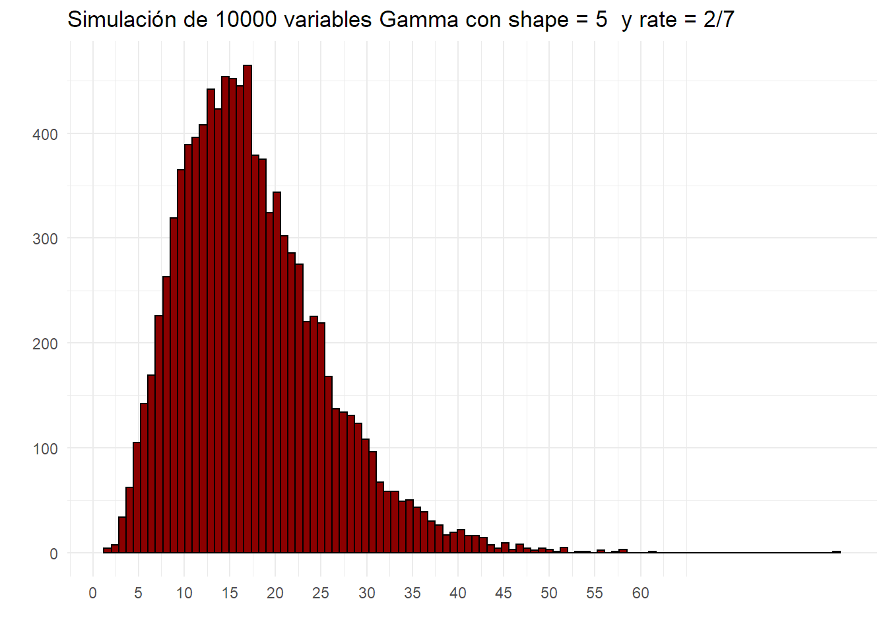

Distribucion Gamma¶
Origen y uso habitual¶
La distribución Gamma es continua y siempre positiva. Se parametriza con dos parámetros que deben ser positivos.
Lamentablemente no hay un consenso sobre cómo llamar a los parámetros y prevalecen dos formas, bastante similares pero con distinto origen.
- La primera es con los parámetros shape \(k\) y scale \(\theta\).
- La segunda es con los parámetros shape \(\alpha\) y rate \(\beta\).
La relación entre ambas es \(k = \alpha\) y \(\theta = 1/\beta\).
Obviamente cualquiera que se use va a resultar en los mismos resultados, pero hay que estar atento para lograr la parametrización adecuada.
Yo prefiero la segunda opción, donde el rate \(\beta\) puede relacionarse al rate \(\lambda\) de una poisson.
Por qué nos interesa relacionarla con la Poisson?¶
Uno de los usos habituales y que resulta fácil de entender es que si nos encontramos en un Proceso de Poisson (si no se recuerda ver ACA), suceden \(\lambda\) eventos por período en promedio (la distribución poisson nos ayuda con eso), el tiempo (medido en períodos) entre un evento y otro se puede modelar con una exponencial con parámetro rate = \(\lambda\) (el mismo de la poisson), y ahora adicionamos que el tiempo medido en períodos hasta que suceda el k-ésimo evento, se puede modelar con la distribución gamma, parametrizada con shape = \(k\) (cantidad de eventos) y rate = \(\lambda\) (el mismo de la poisson nuevamente.)
Por ejemplo:
Si podemos modelar la cantidad de veces que vamos por semana a comprar cerveza como una poisson con \(\lambda\) = 2, es decir en promedio dos veces por semana, tendremos la siguiente distribución.
set.seed(1)
ggplot() +
geom_bar(aes(x = rpois(10000,2)), fill = "lightgreen", color = "black") +
xlab("") +
ylab("") +
ggtitle("Simulación de 10000 variables Poisson con rate = 2") +
scale_x_continuous(breaks = seq(0,9)) +
theme_minimal()
 Donde la mayoría de las semanas vamos alrededor de 2 veces.
Donde la mayoría de las semanas vamos alrededor de 2 veces.
Podemos a su vez, modelar el tiempo entre cada evento con una exponencial. Se lo puede pensar como ¿cuánto tiempo falta para que vaya de nuevo a comprar cerveza a partir del momento en que estoy parado?
Usaremos una exponencial, pero para verlo en días, que sería lo apropiado, cambiamos \(\lambda = 2\) por \(\lambda = 2/7\), que sería el rate por día.
set.seed(2)
ggplot() +
geom_histogram(aes(x = rexp(10000, 2/7)),bins = 100, fill ="darkgreen", color = "black") +
xlab("") +
ylab("") +
ggtitle("Simulación de 10000 variables Exponenciales con rate = 2/7") +
scale_x_continuous(breaks = c(seq(0,10),15,20,25,30,35,40)) +
theme_minimal()
 Vemos que en general faltan 1 o 2 días para que tengamos que ir de nuevo, aunque si tomamos el promedio veremos que es 3.5 dias, lo cuales lógico porque venimos de una poisson con rate de 2 veces por semana.
Vemos que en general faltan 1 o 2 días para que tengamos que ir de nuevo, aunque si tomamos el promedio veremos que es 3.5 dias, lo cuales lógico porque venimos de una poisson con rate de 2 veces por semana.
Si ahora queremos ver en cuantos días habremos ido 5 veces, podemos usar la distribución gamma, con \(shape = 5\) (porque queremos ver el 5 evento), y \(rate = 2/7\) porque es el rate diario.
set.seed(3)
ggplot() +
geom_histogram(aes(x = rgamma(10000, shape = 5, rate = 2/7)),bins = 100, fill = "darkred", color ="black") +
xlab("") +
ylab("") +
ggtitle("Simulación de 10000 variables Gamma con shape = 5 y rate = 2/7") +
scale_x_continuous(breaks = seq(0,60, by = 5)) +
theme_minimal()

Podemos ver que la distribución gamma es asimétrica en este caso y en general faltan unos 12-16 días. Si tomamos el promedio vemos que es de 17.5 días, lo cual tiene sentido ya que es 5 veces el tiempo promedio de espera, que era 3.5 días.
La media de una gamma puede calcularse rápidamente como \(media = \frac{shape}{rate} = \frac{5}{2/7} = 17.5\)
Hay una clara relación entre la distribución Exponencial y la Gamma.
Primero, como ya vimos, la exponencial modela el tiempo hasta el próximo evento en un proceso Poisson y la Gamma hasta el k-ésimo evento.
Podemos pensar a la distribución Gamma como la suma de K distribuciones Exponenciales con un mismo rate!
Yendo más allá, en realidad, la distribución Gamma es una familia de distribuciones, y la Exponencial no es más que un caso particular de la Gamma con k = 1.
Si Gamma nos permite saber el tiempo hasta el k-esimo evento, y la Exponencial es hasta el primer evento, entonces la Exponencial como caso particular de la Gamma parece obvio.
Un poco de formulas¶
La función de densidad de la distribución Gamma, utilizando \(\alpha\) y \(\beta\) es: \(\(\frac{\beta^{\alpha}}{\Gamma (\alpha)}x^{\alpha - 1}e^{-\beta x}\)\)
donde \(\Gamma (\alpha)\) = \((\alpha - 1)!\)
Cuidado con las distintas maneras de nombrar a los parámetros. En la literatura posiblemente vean \(\alpha\) y \(\beta\) cuando usen shape y rate. Aquí para el ejemplo de las cervezas reemplazamos \(\alpha\) por \(k\) y \(\beta\) por \(\lambda\) para relacionarlo con la distribución Poisson.
El equivalente con esa notación sería: \(\(\frac{\lambda^{k}}{\Gamma (k)}x^{k - 1}e^{-\lambda x}\)\)
Como dijimos si reemplazamos k por 1, obtenemos la función de densidad de la Exponencial.
Otras distribuciones que son casos particulares de la Gamma son la Erlang (es Gamma pero con valores discretos de K, la exponencial también es un caso particular de Erlang con k= 1) y la Chi-Cuadrado
Desestimar el significado de Shape y Scale¶
Ya sea que prefiramos shape y scale o shape y rate como parametrización, sus nombres en inglés llevan a pensar que la dsitribución varía su forma con shape y su escala con scale. Eso no es tan así y puede llevar más a confusiones que otra cosa. Ambos parámetros pueden afectar tanto la forma y escala, por eso me parece más sencillo pensarlo con \(k\) Y \(\lambda\), al menos en el ámbito de los procesos Poisson.
Igualmente, no olvidar que la distribcuión Gamma se puede usar para otros campos que no son situaciones de un Proceso de Poisson y esa interpretación de los parámetros puede ser poco apropiada.
k = c(2,9)
rate = c(1,2)
x= seq(0,10, by = 0.1)
df <- expand.grid(lambda = as.factor(rate), k = k, x = x) %>%
mutate(gamma = dgamma(x,k, as.numeric(as.character(lambda))),
combination = as.factor(paste0("k = ",k,", lambda = ",lambda)))
ggplot(data = df, aes(x = x, y =gamma, color = combination)) +
geom_line() +
#geom_point() +
ggtitle("Función de Densidad para distintos parámetros de una Distribución Gamma") +
xlab("Períodos") +
ylab("") +
scale_color_brewer(palette = "Set1")